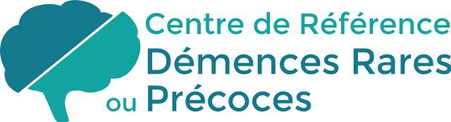

Un entretien individuel
Échanger avec l’équipe, définir vos objectifs et choisir les ateliers adaptés.

MarseilleHôpital de la TimoneLE PROGRAMME ETP · PSP
Un parcours d’éducation thérapeutique pour les personnes atteintes de paralysie supranucléaire progressive et leurs proches.
Télécharger la plaquette du programme (PDF) ↓Échanger avec l’équipe, définir vos objectifs et choisir les ateliers adaptés.
Partager les expériences et découvrir des outils pratiques avec les professionnels.
Revenir sur les apprentissages et évaluer vos progrès avec l’équipe.
LE PROGRAMME EN DÉTAIL
7 ateliers · 4 à 8 participants
Hôpital de la Timone, Marseille
Des repères pour mieux comprendre la maladie et mettre des mots sur ses impacts.
Comprendre les émotions et les changements de comportement, trouver des ressources pour y faire face.
Explorer des solutions concrètes pour les déplacements et la sécurité à la maison.
Faciliter les échanges et entretenir les capacités cognitives au quotidien.
Partager son expérience et accompagner son proche tout en préservant son équilibre.
Mieux connaître les dispositifs de soutien, les solutions de répit et les décisions à anticiper.
Aborder les difficultés de déglutition et les adaptations des repas avec les professionnels.
Le choix des séances se construit avec l’équipe. Les durées sont indicatives.